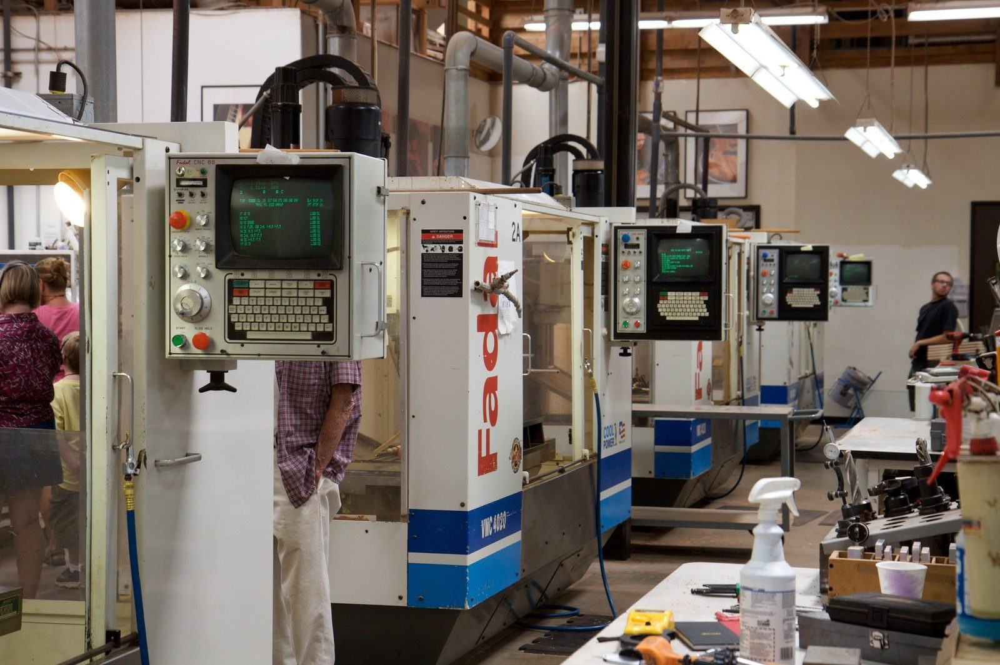
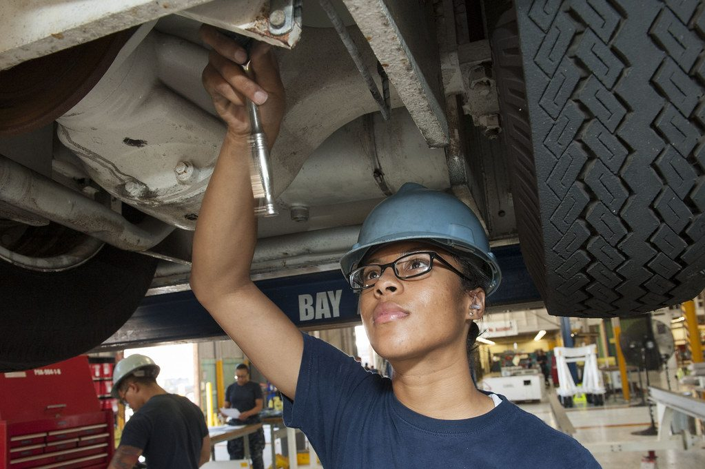
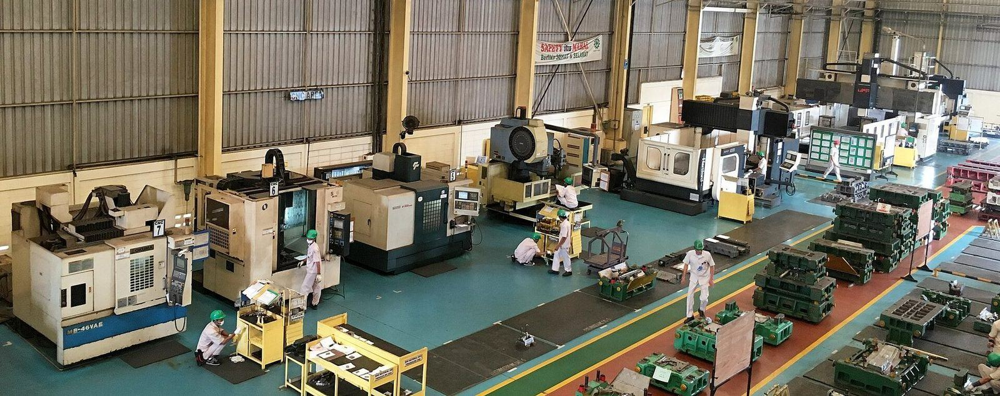

Design & DFM
Fastener and Fitting Selection for Machined Assemblies
Threads, inserts, clearance fits and standard versus custom fittings: how to specify the joints that hold a machined assembly together.
2026-09-18·5 min read

CNC milling, turning, 5-axis machining, EDM and sheet metal fabrication - with the tolerance, finish and inspection record that lets a part be used with confidence.
Most parts need more than one operation. Keeping machining, fabrication, finishing and inspection under one roof removes the handoffs where accuracy and accountability are usually lost.
Prismatic parts, pockets, slots and faces - the default route for most metal components.
Learn moreOne setup for multi-face parts, which is where positional accuracy is won.
Learn moreA part is only as good as the evidence that it is right. Dimensions are verified against the model, critical features are measured on a CMM, and an inspection report can travel with the shipment.
For a new part, a first article inspection confirms the process before volume starts - the cheapest possible moment to find a problem.

Typical planning capabilities - the exact figures for a given part are confirmed when it is quoted.
Aluminium, stainless, carbon steel, brass, copper, titanium and engineering plastics - with the tolerance and finish each one can actually hold.
6061-T6 as the default, 7075 where strength matters. Machines fast, anodises well.
Material guide304, 316L and 17-4PH. Passivation restores corrosion resistance after machining.
Material guidePOM, PEEK, Nylon, PC and ABS - for insulators, low-friction parts and prototypes.
Material guideWork is quoted from the function backwards: what the part must do, in what environment, to what tolerance. That is what decides the process, the material and the finish - and it is also what makes a quotation meaningful.

Short, practical writing on tolerances, process choice and design for manufacture. New articles are added to the notes index and the RSS feed together.
Threads, inserts, clearance fits and standard versus custom fittings: how to specify the joints that hold a machined assembly together.
What an FAI actually verifies, what to send with it, and how to read the report when dimensions miss.
What Ra actually measures, which values are realistic from which process, and when a finish spec is wasted.
CAD file, material, quantity and the tolerances that matter is enough. You get back a manufacturability note and a price.